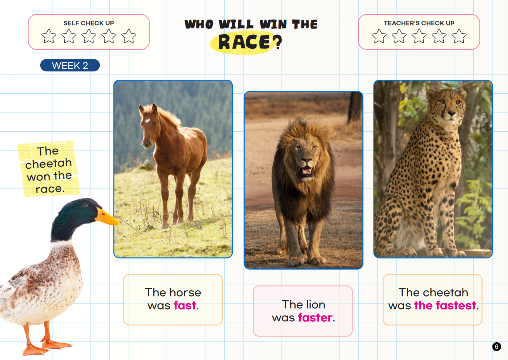
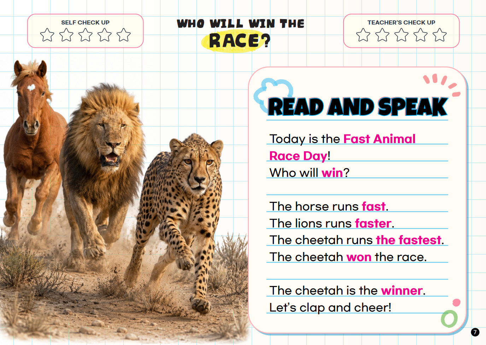
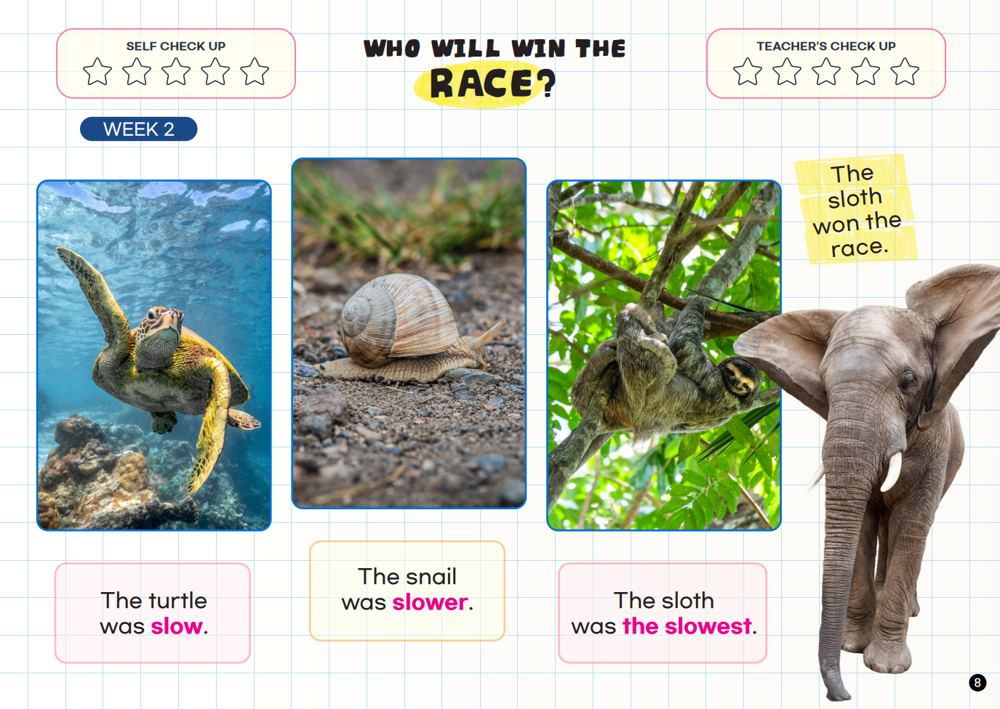
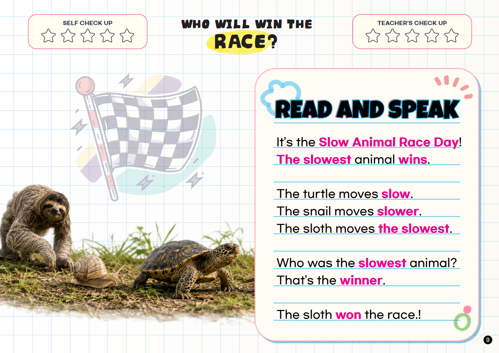

WEEK 2
Who Will Win?
Compare how fast and slow animals move.
Speak It!
“The horse is fast. The lion is faster. The cheetah is the fastest.”
fastfasterthe fastestslowslowerthe slowest




WEEK 2
Compare how fast and slow animals move.
“The horse is fast. The lion is faster. The cheetah is the fastest.”



